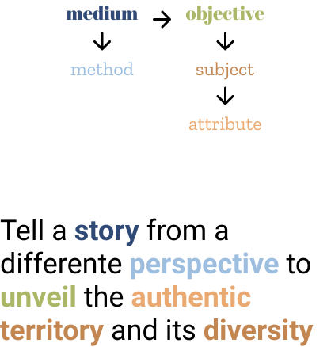

Authentic Amalfi Coast
A tourism website for Authentic Amalfi Coast
Brief: create a tourist portal to showcase the Amalfi Coast culture and enviorment
Summary
The challenge The Authentic Amalfi Coast organisation held a contest for the creation of their new website. They asked help to craft an experience which could even those of the best competitors in the field and with a mobile-first approach. I participated with other two designers and we completed a design proposal in a two-weeks period.
The solution My team defined a coherent UI which could resonate the fascinating enviorment of the Amalfi Coast while following best practices recognised on other turism portals.
Context
Turism portals are thick of information. It is really important to guide users clearly and have great taxonomies to cluster the Information Architecture of such websites. By analysing competitors, we identified recurring structures and clever feature that could support users in their trip planning.
Protopersonas
We started our design process defining some protopersonas. Because of the structure of the contest, we couldn't get in touch directly with the client and understand their current users. Therefore we created some protopersonas, which are based on assumptions instead of real users data, representing basically what we think users are like.
Function and Content brainstorming
The next step was to identiffy the webstite funcitonalities and content. After a brainstorming session, we were able to cluster those elements. Then, we held a dot voting session from the perspective of our protopersonas to defined which of those functionalities and contents were more appealing.
Information architecture
The dot voting activity enabled us understanding hierarchies between various elements and their importance. We defined an information architecture based on this new understanding of the matter, and with more empathy towards the end user.
Concept brainstorming
After developing empathy for the user, we focused on defining a communication strategy for the client. Starting from the brief, we begin a new brainstorming session in three steps (diverging - exploring - converging) to define the content to display on the website and how to present it to users.
Design strategy
This exploration guided the definition of a concept to lead our design choices. We defined the relationship between the clusters identified in the previous steps and translate this relationship into a vision statement.
Wireframing
Combining the information architecture and the vision, we started drafting wireframes and trying different layout solutions.
Design highlights
During the design, we payed much attention to design of a mobile-first experience as requested in the brief. For this reason, we decided to exploit vertical pattern for the most of the design and assure a more seamless experience switching from mobile to desktop.
Another focal point were grids and carousels: it was clear from the competitors analysis that those elements were fundamental to create order, rythm and hierarchy.
UI Design
Along with wireframing, we defined the user interface visual design. We chose Google fonts for easier implementation and designed some custom illustration to enhance the visual identity of the website.
Developed with:
Sandra Grazia Tedesco,
Federica Rho